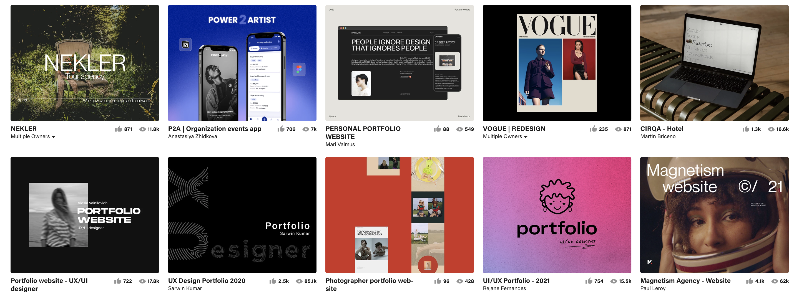

UX Portfolio Resources
Design Inspiration
Adobe's website Behance is a great resource for all things design. On Behance you can find inspiration for a variety of things ranging from an aesthetically-pleasing web layout to a single beautiful icon. Behance is a great way to stay up to date with the latest UI/UX trends, and you can also upload your own work easily!
UX Volunteering

Volunteering is a great way to get some design experiene, while contributing to a community. Almost every organization needs a website or application interface, and so many of them need help fixing their current one. This is where you could come in. I like UX Rescue in particular because you can have a range of skills and still be able to contribute to volunteer projects.
Daily UI Newsletter
This mailing list is a fun way to work on your UI skills. Each day you'll receive a design prompt at a particular time. It's up to you whether or not you want to follow the prompt (there's no one holding you to it), but there are often some interesting ones. Signing up for this mailing list would be good for both your design skills, and your portfolio.